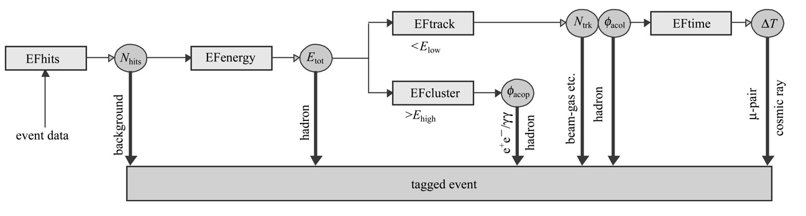

Study of the online event filtering algorithm for BESIII 阅读笔记
主要目标：
- 了解在线事例过滤算法如何处理一个巴巴事例 (Bhabha scattering events)
常见的几种事例类型
- 巴巴事例： e+e- -> e+e-
- 缪子对产生：e+e- -> mu+mu-
- 双光子：e+e- -> gamma gamma
Online filter system 主要作用
- 事例分类
- 本底压低
EVT: event filtering software，是DAQ系统的一部分。
平均的时间延迟设计在 5ms。因此要求更快的处理器和算法。
在线过滤的框架部分采用 Step-by-step 技术，使用控制器配置和管理全局和局部的算法。
基于模拟数据进行事例的产生
- Bhlumi产生巴巴事例
- radgg产生双光子事例
- KKMC产生mu、tau、强子事例
- EvtGen处理粒子的衰变
本底事例采用特别的产生子
- beam-gas样本
- cosmic ray样本
一个在线处理的例子：

图中的方块表示算法，圆圈表示是后续算法用到的变量。
- N hits 小于 1000，信号。大于 1000，本底。
- E tot in EMC
- 强子：在 Elow 和 Ehigh 之间
- e+e-或gamma gamma：大于 E high
- 其他待确定的类型：小于 Elow
- Acoplanarity
- 巴巴事例和gamma gamma事例可以用于在线亮度的计算。
- 但他们无法通过 EMC 的总沉积能量区分。
- 在磁场作用下，带点粒子会发生偏转。因此可以通过重建shower位置来区分。
- 定义 \(\cos\phi_{\mathrm{acop}} = -(\cos\varphi_1 \cos\varphi_2 + \sin\varphi_1 \sin\varphi_2)\)
- 此处的 \(\varphi\) 是shower的方位角。
- 所以上面的公式可以理解为两个矢量点乘。每个矢量的分量是 \(\cos\varphi\) 和 \(\sin\varphi\) 。
- 这样，该变量可以用于区分 e+e- 和 gamma gamma事例。
- gamma gamma事例：小于 \(\phi_1\)
- e+e-事例：在 \(\phi_2\) 和 \(\phi_3\) 之间
- 这是可以理解的，因为gamma不会偏转，所以相对的两个cluster自然是几乎在一个线上。
- Charged track multiplicity 以及 acollinearity angle
- 对于小于 Elow 的事例，则需要 MDC 快速重建。
- 此处的 N trk 是一个非常有用的变量。
- cosmic ray 和 beam-gas 事例：重建得出的径迹几乎为0.
- 其中 10% 的强子事例重建不出径迹。考虑到低能的强子事例占了5%，因此最终有 0.5% 的强子事例会被丢弃。
- 对于两条带电径迹，定义 acollinearity angle \(\cos\phi_{\mathrm{acol}}\) 。这个是三维的向量。
- MUC 探测器中的 hits 数目可以用于决定是否为缪子事例。之后，再由 TOF 决定是缪子对还是宇宙线事例。
- TOF
- 对于宇宙线事例，是先从外面进入探测器，然后再飞出探测器。
- 对于缪子对事例，是从束流管飞出。
- 因此，击中TOF的时间差可以用于鉴别缪子对和宇宙线事例。
- 定义 \(\Delta T = T_1 - T_2\) 其中 \(T_1\) 和 \(T_2\) 分别是上下两部分的 TOF 时间。
- 因为缪子会先击中上面，然后再击中下面，所以时间差小于0.
- Pre-scaling the 端盖巴巴事例
- 因为在charm threshold以上时，巴巴事例的截面会比其他物理事例高很多。 所以为了避免太多的数据，需要对端盖的巴巴事例进行pre-scaling。
- EBB：Endcap Bhabha 如果在端盖有shower
- 注意，有些纯中性的道，例如 \(J/\psi \to \gamma\pi^0\) ，可能也会发生误判。 为了减少误判，还需要借助MDC sector的hit 数目。
- Online luminosity monitoring
- 这部分还没有太理解
论文的第五节给出了在线过滤算法的性能
- 算法是在离线环境下开发，但是将在离线和在线平台运行。
- 因为大多数感兴趣的事例击中在 charmonium，因此生成的样本也集中在 \(J/\psi\) \(\psi'\) \(\psi''\)
性能研究的第一项是过滤的效率
- BII的亮度在能量为 1.89 GeV 时是经过优化的，因此在这个能量点的物理过程和本底贡献都被考虑了。
- \(\epsilon_{ij} = N_j / N_i\)
- \(N_i\) 表示 level 1 触发给出的类型 \(i\) 的事例数
- \(N_j\) 表示类型为 \(j\) 的事例数
- 在当前的算法中，不允许有多个标记
- 所有的事例被分成两个大类：physics 和 background
- 物理事例更关系挑选的效率，本底事例更关心压低的效率。
性能研究的第二项是运行时间
- 最开始研究的时候，所有子算法都要调用。从而保证子算法都被调试过。
- 我觉得这一点非常值得借鉴。特别是在测试的阶段。
- 后来他们优化了算法，允许快速跳过后续的处理。
第三项研究是挑选条件
- 这里主要研究了 Elow 的影响
论文的最后一部分是总结。